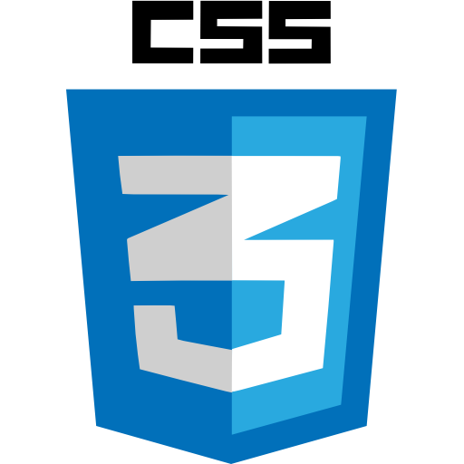

Bueno mi nombre es Rodrigo Lovón actualmente tengo 19 años ,me encuentro en el segundo año de la carrera de diseño de desarrollo de software , me considero una persona activa que le gusta el trabajo en equipo, apesar de no tener un desembolbimiento tan fluido, es uno de los factores en los que trabajo mayormente para tener mejores capacidad y aptitudes en mi futuro por venir
Algunos de mis gustos, hobiies son:
-Escuchar musica.
-Hacer atletismo.
-La natación.
-Jugar videojuegos.
-Leer libros de ficción y suspenso.
-Programar.
-Cantar.
Algunas de los lenguajes de Programación de los que tengo conocimiento
| Python | Java | HTML | CSS | JV | Arduino | SQL |
|---|---|---|---|---|---|---|
|
|
|
 | |
|
|